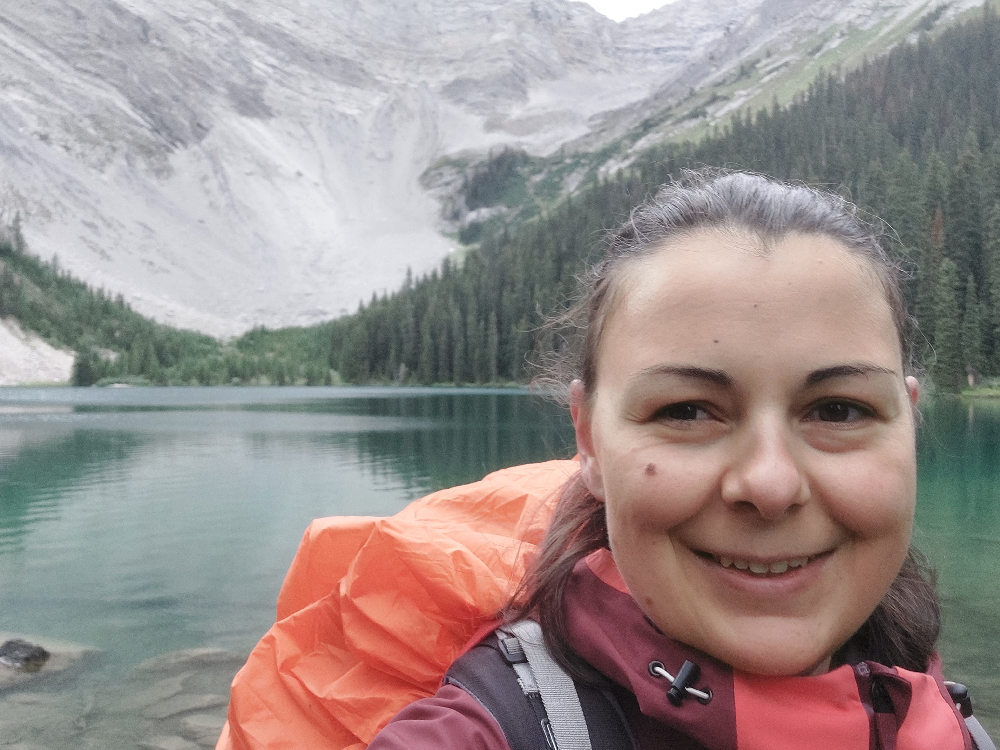

My name is Kristýna Kramer, but I wrote most of my mathematical research papers under my former name, Kristýna Zemková.
My research interest is in quadratic forms, mainly over fields of characteristic two, but also in the number-theoretical settings. Apart from research, I am interested in finding ways how to teach mathematics better, both at high school and university level.

By the Mystic Lake [2000 m] in the Rocky Mountains (Canada)
In December 2022, I finished my PhD at TU Dortmund under the supervision of Detlev Hoffmann. My thesis was on quadratic forms over fields of characteristic two and quasilinear p-forms, with the focus on the equivalence relations of these forms.
I did my Bachelor's and Master's degree at the Faculty of Mathematics and Physics at Charles University in Prague. My Master's thesis, written under the supervision of Vítězslav Kala, was on composition of integral quadratic forms and Bhargava's cubes over number fields. Additionally, I was involved (together with M. Čech, J. Krásenský, J. Svoboda and M. Tinková) in a student's research group with interests mainly in universal properties of integral quadratic forms.
During my Master's, I spent two semesters abroad: in Spain at UPC (in Barcelona), and in Germany at TU Darmstadt.
Didactics of mathematics
As I mentioned above, I am interested in improving the ways how mathematics is being taught. My main motivation is that I would like to show the students that mathematics is about understanding, not about memorizing algorithms. In the past, I helped to develop new study materials on high school mathematics: I am a co-author of two advanced high school textbooks published by a significant Czech publishing house Didaktis; one on complex numbers, matrices and basic calculus (published in 2019) and another one on progressions (published in 2018). I was also involved in developing new interactive materials for Techambition; the aim is to encourage high school students to develop mathematical concepts by themselves rather than to memorize them.